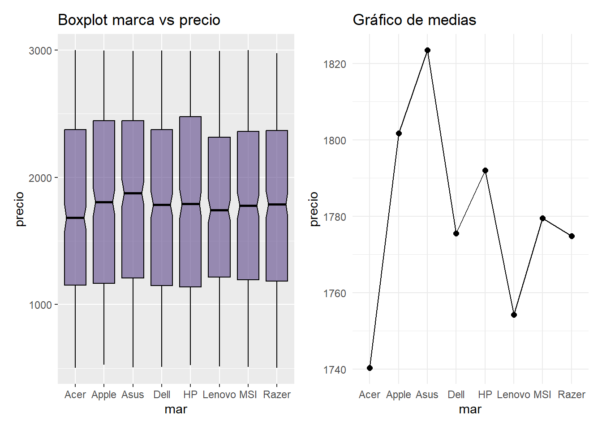
FACTORES CLAVE EN LA VARIACIÓN DE PRECIOS DE COMPUTADORES PORTÁTILES: UN ESTUDIO PREDICTIVO
INTRODUCCIÓN
Los computadores portátiles son herramientas clave para la vida laboral y académica, actualmente deben atender una amplia gama de necesidades para desarrollar correctamente las actividades que el dueño solicita. Estas máquinas tienen una vida útil, esto significa que después de un período de tiempo es necesario cambiar estos dispositivos por uno más nuevo que implemente tecnologías más avanzadas y contemporáneas a los requerimientos básicos de la actualidad. Para este trabajo se plantea una problemática la cual es la predicción de precios de computadores portátiles que posiblemente tiendan a variar, influenciados por la introducción de nuevos componentes, la demanda del mercado y la competencia entre marcas. Mediante un análisis estadístico se indagará qué tipo de atributos pueden influir de manera significativa en los precios de los portátiles, adaptando cada uno de estos factores a opciones que los consumidores puedan encontrar ajustadas a su presupuesto. Para ser más específicos se plantearon una pregunta principal y dos preguntas auxiliares, las cuales serán útiles para estudiar datos puntuales que darán respuesta a estas:
¿Cuáles son los principales factores que influyen en el precio de los computadores portátiles, y cómo varía su importancia en el desarrollo de avances para estos componentes?
¿Cómo logra la portabilidad( Peso, tamaño de la pantalla y duración de la batería) del computador portátil, afectar el precio en comparación con las capacidades de rendimiento?
¿ Pueden las variables cualitativas ser más influyentes que las cuantitativas a la hora de estimar el valor de un computador?
Objetivos
General
Con este trabajo se pretende analizar los factores determinantes en la variación del precio de los computadores portátiles, considerando tanto sus características internas como aspectos relacionados con la portabilidad, recopilando los datos necesarios mediante un modelo de regresión donde se pueda identificar patrones y tendencias, generando observaciones que las empresas productoras puedan considerar a la hora de elaborar estos dispositivos y desarrollar nuevos componentes para optimizar la relación entre precio, tecnología y necesidades del consumidor.
Específicos
Analizar el impacto de diferentes características de un computador portátil, como la portabilidad( peso, tamaño de pantalla, duración de la batería) y las capacidades de rendimiento(velocidad del procesador, memoria RAM, capacidad de almacenamiento), en el precio final del producto. Donde se busca cuantificar la relación entre estas variables y determinar cuales influyen de manera más significativa en el costo de los dispositivos, también identificar el equilibrio entre la portabilidad y rendimiento para así poder tomar decisiones en el diseño y compra de computadores tecnológicos.
Observar que tipo de variables afectan en mayor o menor magnitud al precio del computador. Analizando estos factores, conseguir una vista panorámica amplia sobre la importancia de cada tipo de variable. Considerando esto, proponer un criterio más certero para asegurar cuál tipo de estas podrá ser un elemento vital a la hora de mirar el valor de un computador portátil. cualitativas y cuantitativas.
A continuación encontrará la clasificación de las variables según su naturaleza, una breve definición y la asignación que se le dio en el análisis estadístico realizado:
| Variable | Definición | Tipo | Asignación en R |
|---|---|---|---|
| Marca | Nombre o fabricante del dispositivo. | Cualitativa | mar |
| Modelo | Especificación concreta dentro de la marca, que diferencia las características de diferentes productos. | Cualitativa | mlo |
| Procesador | Unidad central de procesamiento del dispositivo, encargada de ejecutar las instrucciones y operaciones del sistema. | Cualitativa | pro |
| RAM | Es el almacenamiento temporal que usa el dispositivo para cargar y ejecutar programas y datos rápidamente. | Cualitativa | ram |
| Almacenamiento | Capacidad de almacenamiento interno del dispositivo para guardar archivos y programas de manera permanente. | Cualitativa | alm |
| Tamaño de pantalla | Dimensión diagonal de la pantalla del dispositivo. | Cualitativa | tam |
| Tarjeta gráfica | Componente que maneja los gráficos y las imágenes que se muestran en la pantalla. | Cualitativa | tag |
| Sistema operativo | Software principal que gestiona el hardware y otros programas en el dispositivo. | Cualitativa | sop |
| Peso | Masa del dispositivo, puede indicar lo fácil o difícil que es transportar el dispositivo. | Cuantitativa | peso |
| Vida de la batería | Cantidad de tiempo que un computador portátil puede funcionar con una sola carga de batería antes de necesitar ser recargado. | Cuantitativa | vib |
| Precio | Costo monetario del dispositivo, que varía según sus características y el mercado. | Cuantitativa | precio |
| Garantía | Período de tiempo en el que el fabricante se compromete a reparar o reemplazar el dispositivo en caso de defectos o fallos. | Cualitativa | gar |
ANÁLISIS EXPLORATORIO
El siguiente segmento de gráficas tiene como objetivo acercar al lector en un primer momento con los datos que se disponen para hacer este análisis y el papel que cumplen en la situación planteada para el trabajo.
Antes de comenzar el análisis exploratorio se realizará un ajuste que facilite el manejo de los datos:
- Las siguientes variables se tomarán como factores debido a que no son datos distintos entre si, sino que cumplen con categorías estándar:
- Tamaño de pantalla
- Garantía
- RAM
- Almacenammiento
- Para facilitar el uso de las variables , se realizarán 2 subconjuntos dependiendo de su categoría:
Variables cualitativas: Marca, Procesador, RAM, Almacenamiento, Tamaño, Tarjeta gráfica, Sistema operativo, Garantía.
Variables Cuantitativas: Peso, Vida de la batería, Precio.
Para hacer una comparativa entre la variable respuesta y cada una de las variables de la base de datos se realizarán una serie de gráficos que evaluen el comportamiento de estas. La variable ‘mlo’, no será parte de este análisis, ya que representa un listado, por lo que no es objeto del estudio que se llevará a cabo:
Variables cualitativas
Marca vs Precio
El rango más amplio de precios le pertenece a la marca HP; el de menor rango a la marca Lenovo, esto genera una variación en las opciones para el cliente. Asus maneja el promedio más alto de precios, mientras Acer ofrece un menor promedio en estos, convirtiéndose en una marca asequible para el consumidor promedio, sin embargo deben considerarse las demás variables de estudio.
Procesador vs Precio
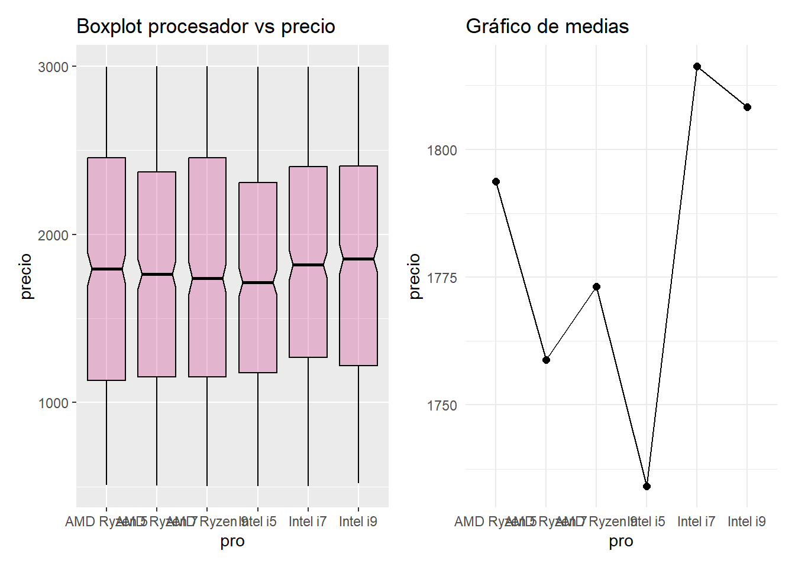
Los computadores con procesador AMD Ryzen 5 tiene más variabilidad en su precio, los de menor variabilidad son los de procesador Intel i5. El precio más alto en promedio es de los computadores con procesador Intel i9, y el de menor promedio de precios es el Intel i5. Dependiendo de la necesidad del consumidor se puede determinar un punto medio entre estos procesadores para adaptarse a la mejor opción.
RAM vs Precio
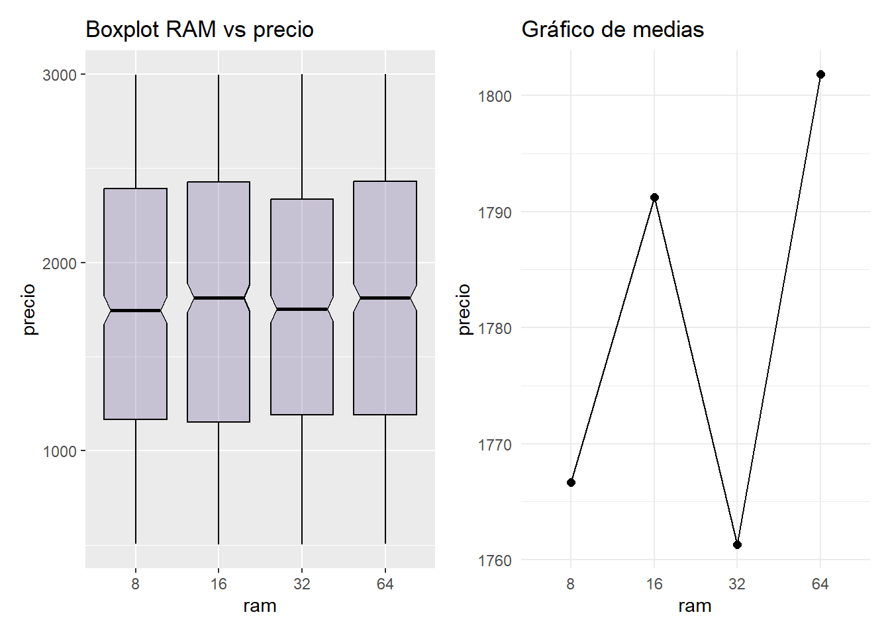
Esta gráfica relaciona la RAM y el precio, los portátiles que tienen una RAM de 16 tiene mas variabilidad en el precio y a los de menor le corresponde una RAM de 8. La de menor variación puede verse afectada por las necesidades de los consumidores, ya que al ser un elemento indispensable para estos dispositivos se encuentra un estándar con una mayor RAM para cumplir con su función, está es la de 16, a la cual le corresponde el menor promedio en los precios, mientras la mayor RAM le corresponde el mayor promedio, esta es la de 64.
Almacenamiento vs Precio
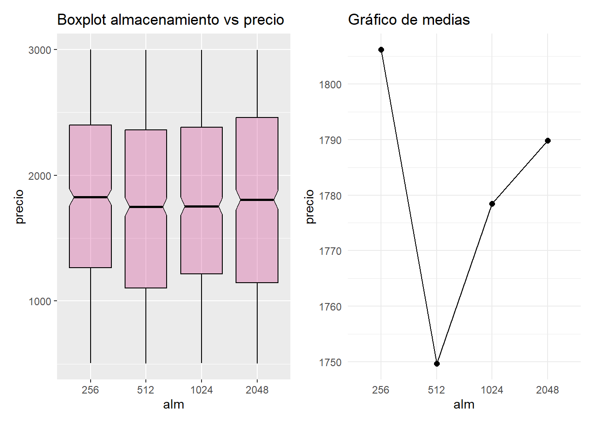
Los dispositivos que tienen 512 gb de almacenamiento son los que en promedio valen menos a diferencia de los otros, este es un punto medio para los clientes y sus necesidades en cuanto a almacenamiento. El rango de precios más amplio le corresponde a los computadores con 2048 gb de capacidad, lo que puede llamar la atención, ya que el almacenamiento es una característica importante y por su variedad uno de estos portátiles puede estarse adaptado al precio de un consumidor en específico.
Tamaño de pantalla vs Precio
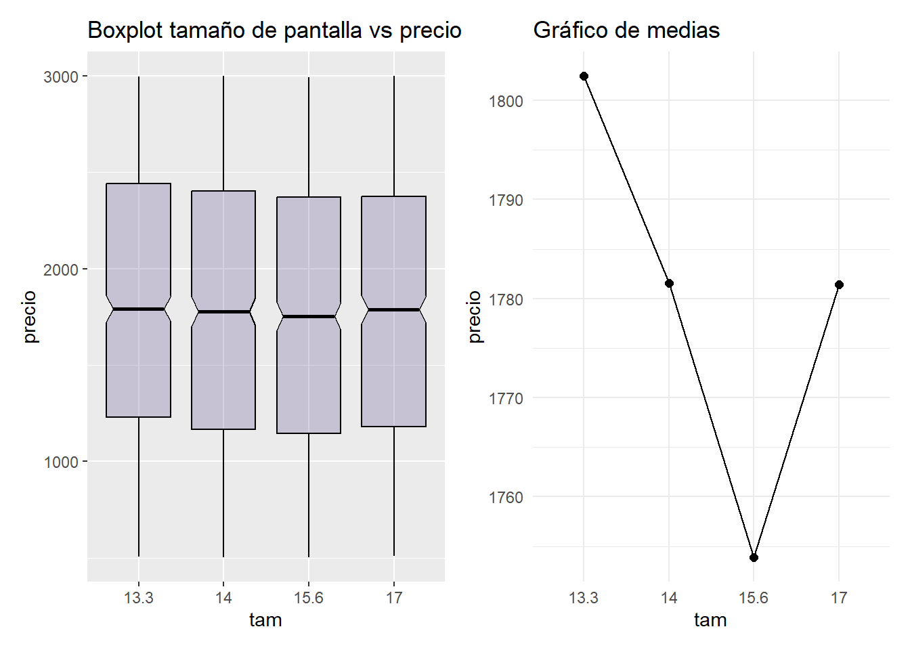
La anterior gráfica relaciona el tamaño de la pantalla y el precio. Puede observarse que el rango más amplio de precios es el de los computadores con un tamaño de pantalla de 13.3 pulgadas, contrario al de 17 que tiene un rango menos amplio. Los computadores con la pantalla de 17 pulgadas son los que tienen el mayor precio promedio entre sus los demás, mientras que los computadores con pantalla de 15.6 pulgadas tiene el menor. Esta característica es útil dependiendo del uso que se le de al dispositivo, como por ejemplo un editor de videos, quien puede requerir un espacio amplio en la pantalla para maximizar su productividad en sus tareas.
Tarjeta gráfica vs Precio
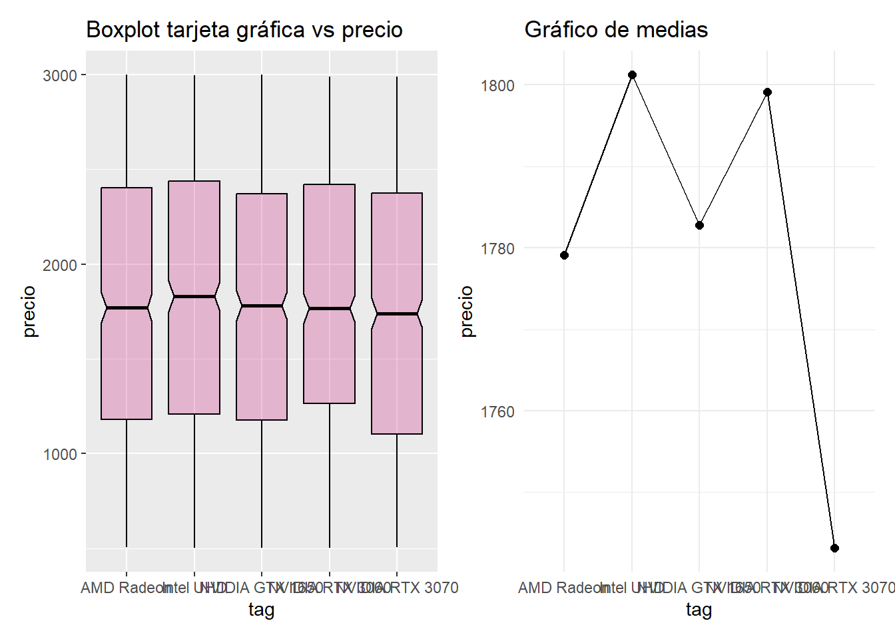
Los computadores portátiles pueden tener varios tipos de tarjeta gráfica, esto podría generar una variación en su precio. La que posee media de precio más grande es la Intel UHD y la de menor es la NVIDIA RTX3070, gracias al gráfico ‘plotmeans’ se puede ver que la AMD Radeon esta en mayor número de dispositivos y la NVIDIA RTX 3060 en una menor cantidad, factor que podría afectar en la media del precio de computadores que contienen esas tarjetas gráficas. Hacer un análisis de su variación puede ser útil para la población gamer, ya que es un detalle muy importante a la hora de comprar una computadora, ya que la tarea de la tarjeta gráfica se encarga de procesar las imágenes y vídeos que se reproducen.
Sistema operativo vs Precio
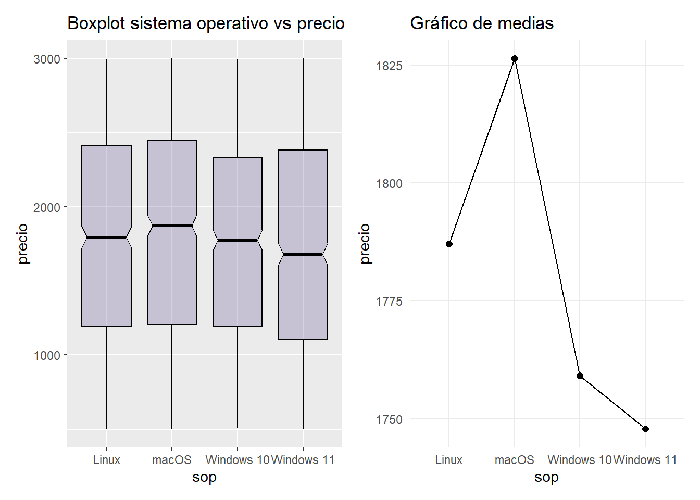
Este gráfico muestra que el sistema operativo macOS tiene media de precio más alta, en contraparte, el Windows 11 es el que menos vale en promedio . El Windows 11 tiene la mayor variabilidad en los precios. El computador que contiene el Windows 10 es el de menos variabilidad en el precio. La elección del sistema operativo influye en la experiencia del usuario, la compatibilidad con software y hardware, y el rendimiento del equipo.
Garantía vs Precio
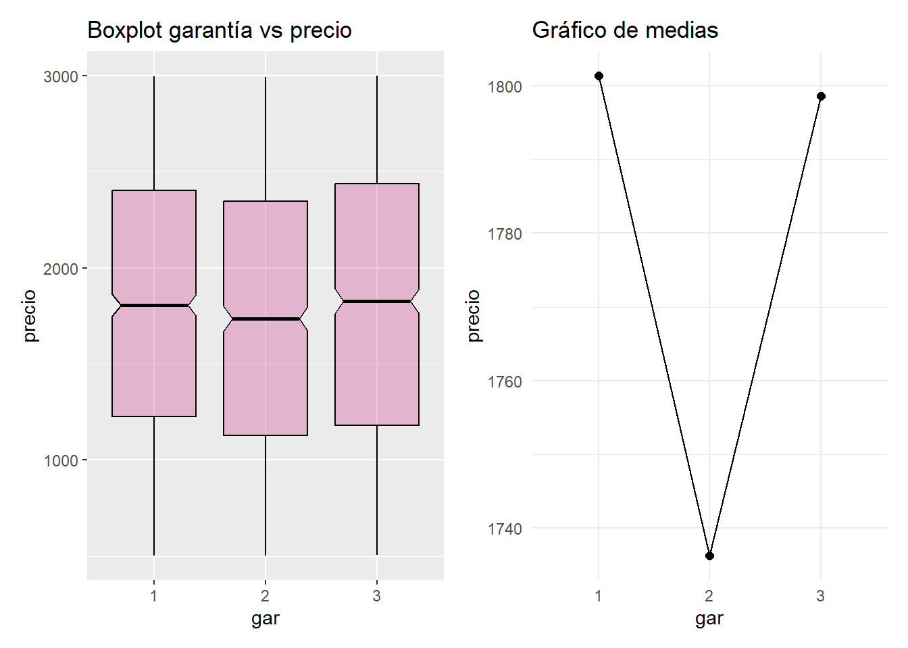
En este último boxplot comparando las variables cualitativas con el precio de los computadores se puede observar que los dispositivos con tres años de garantía son en promedio más costosos que los que tienen menos años, esto puede ser porque se debe asegurar los computadores por un plazo más largo. Con el gráfico ‘plotmeans’ se observa que la mayor muestra es la de computadores de 1 año de garantía pero cada muestra supera los 900 datos.
Variables cuantitativas
Peso vs Precio
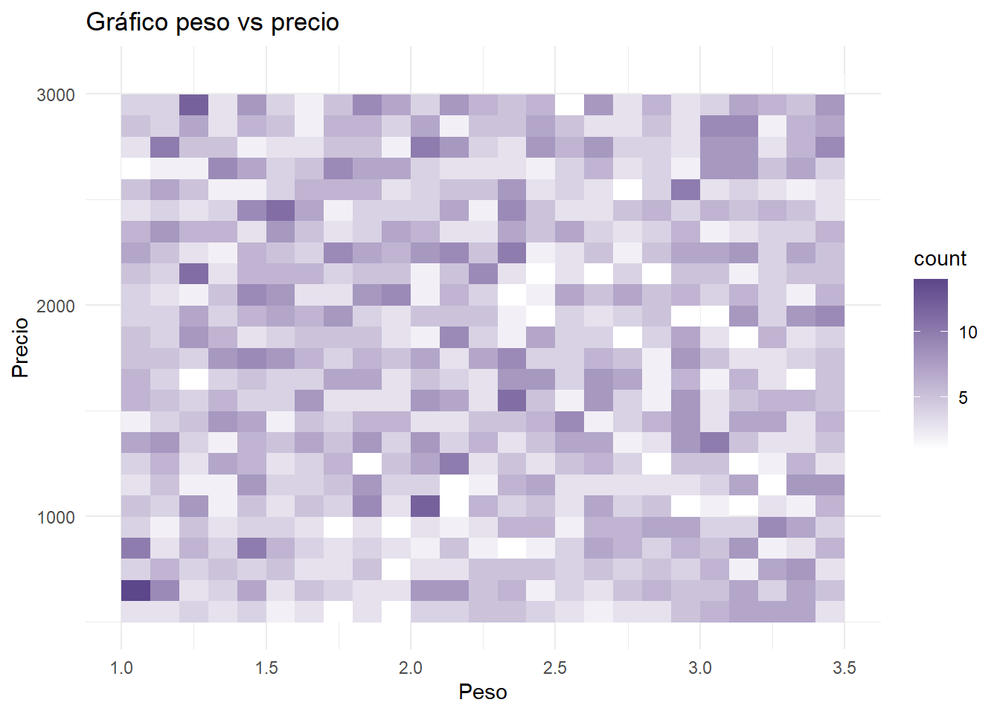
Entre las ventajas de poseer un computador portátil, como lo dice la palabra, esta la portabilidad que le pueda dar su dueño y transportar este fácilmente si es que se requiere, por eso los fabricantes procuran hacer su peso lo más ligero posible. El intervalo de pesos en esta gráfica va desde 1 kg hasta los 3.5 kg. Donde hay mayor cantidad de computadores es entre 1.0 y 2.4 kg. Entre los datos con mayor densidad están los que pesan aproximadamente 1.0 kg , a los cuales les corresponde un precio de menos de $1000, el cual es bajo a diferencia de los que pesan aproximadamente 1.4 kg, pues su rango de precios oscilan a hasta los $3000 y por último encontramos los que están entre 2 y 2.1 kg, los cuales sus precios están entre los $1000 y $1100.
Vida de la batería vs Precio
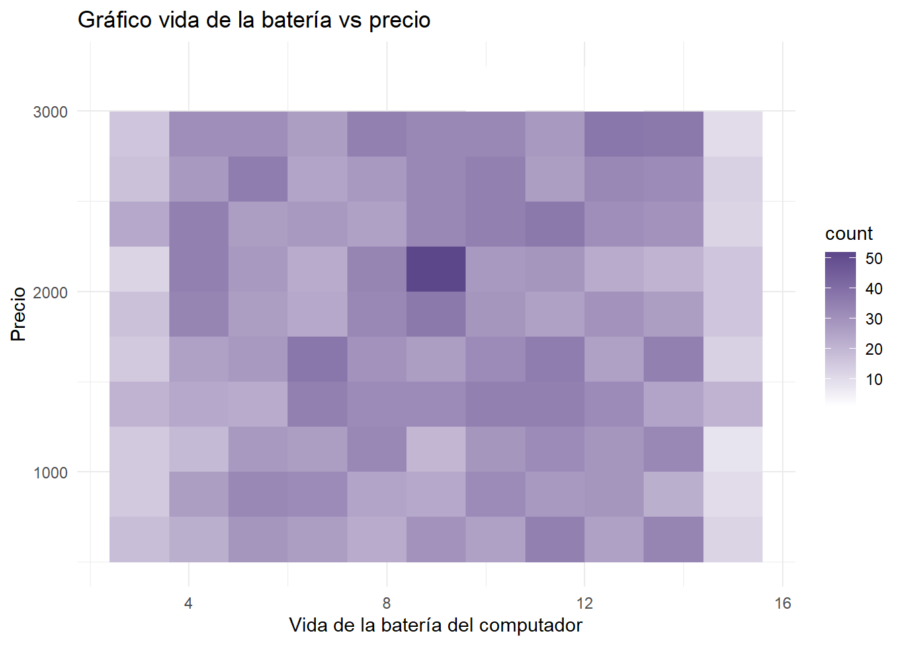
La vida de la batería es otra característica importante en la portabilidad del computador, ya que el cliente esperaría conseguir un dispositivo cuya batería pueda durar el mayor tiempo posible, mientras trabaja remotamente. Aunque el portátil tenga su respectivo cargador, este será un punto la comodidad para el usuario y a medida que el dispositivo se deterioré, evitar que su computador portátil se convierta en uno de mesa al tener que estar conectado todo el tiempo. El intervalo con mayor cantidad de datos esta aproximadamente entre 5 y 14 horas, y en cuestión de precios puede notarse bastante variación, sin embargo, hay un punto en la mitad que destaca sobre todos y representa donde se acumula la mayor cantidad de datos. De este punto en específico se puede inferir que al estar ubicado en la mitad de horas de vida de la batería, le corresponderá también estar en la mitad del rango de precios.
A partir de los análisis individuales hechos anteriormente, puede concluirse que el precio no puede depender de una sola característica en específico, pues la decisión para elegir un computador depende de varios factores dependiendo de las necesidades del consumidor. Como siguiente paso se hará un contraste entre las variables pertinentes para seguir indagando, esperando obtener una base sólida para responder la pregunta: ¿Cuáles son los principales factores que influyen en el precio de los computadores portátiles?.
MODELOS DE REGRESIÓN LINEAL
Para el planteamiento de estos se tomó como referencia las preguntas a responder, y en base a estas crear modelos los cuales tengan la posibilidad de contestar estas o simplemente reflejar su nivel de importancia para la toma de decisiones. En este orden de ideas a cada uno se le realizará un análisis de multicolinealidad para determinar si las variables propuestas son útiles en los modelos, después una detección y eliminación de ‘outliners’ que puedan afectar el siguiente paso que sería la validación del modelo.
Modelo 1: Variables que puedan afectar en mayor cantidad el precio (componentes internos)
El modelo realizado en esta sección se eligió basado en los componentes internos del computador, los cuales cargan con mucha importancia a la hora de la compra de estos dispositivos. De igual manera consideramos que pueden tener mayor valor en el momento para determinar precio, además son elementos que cada vez las compañias se enfocan en desarrollar más, así creando competencia en la competencia que se presencia en el mercado de hoy en día. La siguiente línea de código le corresponde a estos elementos, los cuales se combinaron mediante sumas simples, pues no se considero otro tipo de operación que pudiera ser consistente en este caso:
m1<- lm(precio ~ pro + ram + tag + vib, data= base)summary(m1)
Call:
lm(formula = precio ~ pro + ram + tag + vib, data = base)
Residuals:
Min 1Q Median 3Q Max
-1349.16 -605.98 -1.15 623.22 1284.21
Coefficients:
Estimate Std. Error t value Pr(>|t|)
(Intercept) 1792.191 58.008 30.896 <2e-16 ***
proAMD Ryzen 7 -34.478 44.942 -0.767 0.443
proAMD Ryzen 9 -21.587 45.489 -0.475 0.635
proIntel i5 -59.712 45.314 -1.318 0.188
proIntel i7 21.521 46.091 0.467 0.641
proIntel i9 15.374 45.173 0.340 0.734
ram16 26.083 37.463 0.696 0.486
ram32 -5.888 37.425 -0.157 0.875
ram64 35.258 37.526 0.940 0.348
tagIntel UHD 26.327 41.622 0.633 0.527
tagNVIDIA GTX 1650 8.981 41.148 0.218 0.827
tagNVIDIA RTX 3060 26.350 41.758 0.631 0.528
tagNVIDIA RTX 3070 -30.647 40.667 -0.754 0.451
vib -1.955 3.822 -0.511 0.609
---
Signif. codes: 0 '***' 0.001 '**' 0.01 '*' 0.05 '.' 0.1 ' ' 1
Residual standard error: 720.4 on 2986 degrees of freedom
Multiple R-squared: 0.003058, Adjusted R-squared: -0.001282
F-statistic: 0.7046 on 13 and 2986 DF, p-value: 0.7606- Multicolinealidad:
Con el summary(m1) puede obtenerse una vista previa de la significancia que tiene el modelo propuesto, la cual en este caso indica que no hay una relación significativa entre las variables predictoras y el precio. Lo que puede deberse a un problema de multicolinealidad y es necesario hacer un análisis para detectar presencia outliers o puntos de influencia que puedan estar afectando en los resultados que se desean obtener.
vif(m1) GVIF Df GVIF^(1/(2*Df))
pro 1.015327 5 1.001522
ram 1.008471 3 1.001407
tag 1.013708 4 1.001703
vib 1.001987 1 1.000993Del valor del factor en la varianza vif(m1) en el modelo 1 podemos observar que ninguna de las variables seleccionadas genera problema de colinealidad, es decir, hay una posible relación con entre el procesador, la RAM, la tarjeta gráfica y la vida de la batería. Por lo que no surge la necesidad de eliminar una de estas. Sin embargo, esta relación tiende a ser mínima, casi nula por lo que el valor de todas tiende a 1, lo cual va de la mano con la correlación entre las variables e insiste que no hay relación fuerte entre estas y la variable respuesta. Por el momento no se descarta la posibilidad de que este modelo pueda servir a la hora de predecir el precio, también se hará un análisis gráficos y revisar si hay datos que puedan afectar este. En la siguiente gráfica podrá observar los posibles outliers y puntos de influencia:
- Puntos de influencia y outliers:
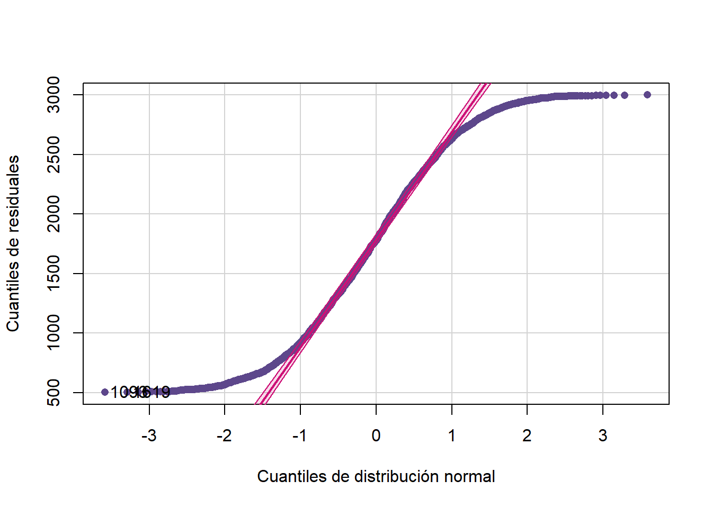
[1] 1093 1619Hay presencia de puntos de influencia, ya que se puede observar que los puntos al final y al inicio se alejan de la pendiente de la recta ajustada. Para sustentar esta suposición se realiza una prueba estadística y analizar los posibles datos a eliminar.
influence.measures(m1)Para este modelo se hará uso de los ´dffits(ms1)´ del modelo como criterio para medir la influencia de los puntos, si |DFFITS|> 2*p/n^1/2, entonces el punto i es un influencia. Siendo p = 4 (# de predicciones) y n = 3000 (# de datos), se obtiene un valor de 0,07303. Los datos cuyo valor absoluto sea mayor a este valor mencionado, deben ser eliminados de la base para el análisis de este modelo.
nuevo_m1<- subset(base, abs(DFFITS) <= 0.07303 )Se añadió una nueva columna a la base que contuviera los ‘DFFITS’ de cada dato para luego hacer una depuración de datos. La cual como resultado eliminó 1133 datos de la base inicial y con este filtro realizar un nuevo modelo 1.
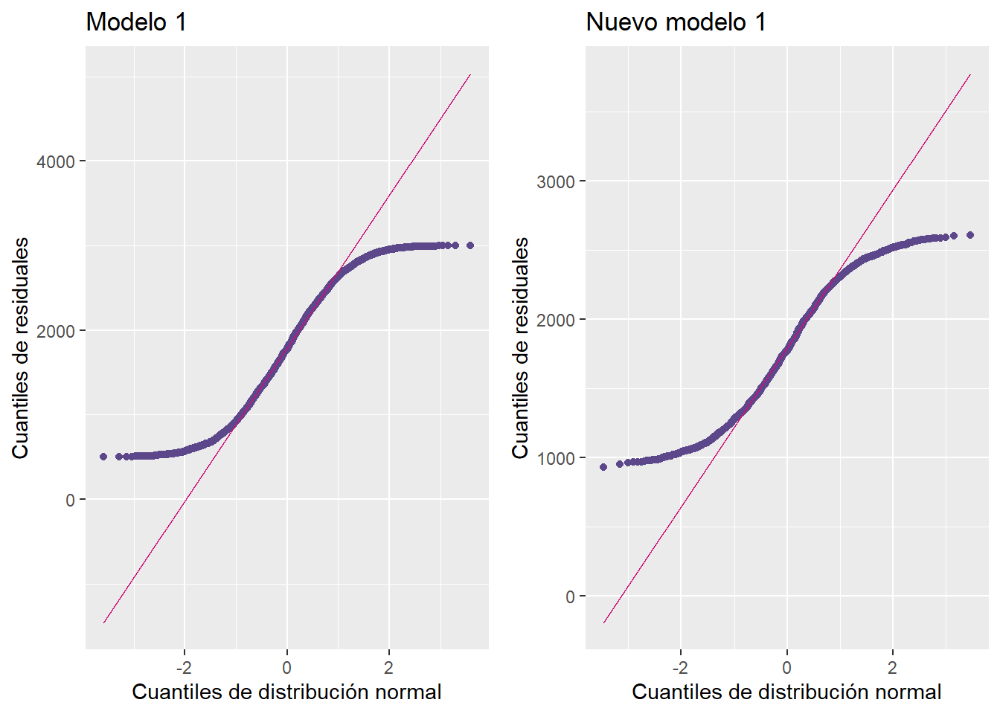
Si se comparan la gráfica antes de la depuración y la que va después, se puede observar una disminución de puntos de influencia. Una opción para seguir reduciéndolos puede ser realizar las demás prueba de detección, pero al eliminar tantos datos al mismo tiempo puede estarse perdiendo información provechosa para el ejercicio. Por lo que el nuevo modelo 1 será el que se llevará al siguiente paso, el cual es su validación.
Validación del modelo 1
A partir del modelo filtrado se realizará una validación, en esta sección de utilizaran únicamente pruebas estadísticas para facilitar la lectura de los resultados.
- Normalidad
shapiro.test(m1n$residuals)
Shapiro-Wilk normality test
data: m1n$residuals
W = 0.95844, p-value < 2.2e-16ad.test(m1n$residuals)
Anderson-Darling normality test
data: m1n$residuals
A = 20.288, p-value < 2.2e-16jarque.bera.test(m1n$residuals)
Jarque Bera Test
data: m1n$residuals
X-squared = 109.35, df = 2, p-value < 2.2e-16Del valor-p de las pruebas puede concluirse que los residuales de este modelo no siguen una distribución normal. Por lo que las estimaciones que se hagan a partir de las variables elegidas en este modelo no serán precisas. Esto le restará validez a la predicciones que se quieran hacer, la confianza de los resultados y la precisión de este modelo.
- Homocedasticidad
bptest(m1n)
studentized Breusch-Pagan test
data: m1n
BP = 11.504, df = 13, p-value = 0.5687A partir de el valor p se puede concluir que el modelo cumple con homocedasticidad, es decir, la variabilidad es constante a lo largo de todos los niveles de las variables procesador, RAM, tarjeta gráfica y vida de la batería.
- Independencia
bgtest(m1n)
Breusch-Godfrey test for serial correlation of order up to 1
data: m1n
LM test = 0.31088, df = 1, p-value = 0.5771dwtest(m1n)
Durbin-Watson test
data: m1n
DW = 1.9742, p-value = 0.2886
alternative hypothesis: true autocorrelation is greater than 0El modelo cumple con independencia, lo que significa que no existe correlación serial entre los residuos del modelo, esto significa que es posible hacer predicciones a partir de la relación del precio con el procesador, la RAM, tarjeta gráfica y vida de la batería de manera efectiva sin verse influenciadas por errores pasados.
En conclusión se logró realizar un aproximación a un modelo de regresión efectivo, sin embargo ese no cumple con normalidad, y esto puede ser a causa de los puntos de influencia que todavía quedaron presentes en este. Aquí entra la importancia de realizar varios, considerando que puedan ser mejores para el objetivo que se quiere alcanzar.
Modelo 2: Variables que representen la portabilidad del dispositivo
La portábilidad del dispositivo es uno de los factores más importantes de estos dispositivos, ya que están diseñados para ser transportados de forma sencilla sin dificultades. Por eso se considera que los factores como el tamaño, la vida de la batería y el peso, los cuales aportan a esta característica y posiblemente puedan estar afectando el precio.
m2<- lm(precio~ tam + vib + peso, data= base)summary(m2)
Call:
lm(formula = precio ~ tam + vib + peso, data = base)
Residuals:
Min 1Q Median 3Q Max
-1293.56 -598.20 -2.69 619.51 1241.37
Coefficients:
Estimate Std. Error t value Pr(>|t|)
(Intercept) 1838.407 58.388 31.486 <2e-16 ***
tam14 -20.988 36.786 -0.571 0.568
tam15.6 -48.367 36.444 -1.327 0.185
tam17 -20.583 36.900 -0.558 0.577
vib -1.927 3.820 -0.504 0.614
peso -8.312 18.020 -0.461 0.645
---
Signif. codes: 0 '***' 0.001 '**' 0.01 '*' 0.05 '.' 0.1 ' ' 1
Residual standard error: 720.2 on 2994 degrees of freedom
Multiple R-squared: 0.0007538, Adjusted R-squared: -0.000915
F-statistic: 0.4517 on 5 and 2994 DF, p-value: 0.8123De la primera información obtenida del modelo 2 se puede observar que los coeficientes de las variables son pequeños y ninguno parece tener un impacto estadísticamente significativo sobre el precio, ya que los valores p son mayores a 0,05. También puede determinarse que su correlación tiende a ser muy baja, esto indica que las variables no tienen una influencia significativa sobre el precio en este modelo.
- Medidas de influencia
summary(influence_measures)Potentially influential observations of
lm(formula = precio ~ tam + vib + peso, data = base) :
NONEnumeric(0)Ninguna de las observaciones muestra valores altos de Cook’s Distance, DFBETAS o hat values, lo que significa que no hay observaciones altamente influyentes que afecten los coeficientes del modelo de manera significativa. De esta manera puede procederse con el mismo modelo, con igual cantidad de datos y variables.
Validación del modelo 2
- Normalidad
shapiro.test(m2$residuals)
Shapiro-Wilk normality test
data: m2$residuals
W = 0.9562, p-value < 2.2e-16ad.test(m2$residuals)
Anderson-Darling normality test
data: m2$residuals
A = 31.729, p-value < 2.2e-16jarque.bera.test(m2$residuals)
Jarque Bera Test
data: m2$residuals
X-squared = 175.15, df = 2, p-value < 2.2e-16Las pruebas de Shapiro-Wilk, Anderson-Darling, y Jarque-Bera tienen valores-p muy bajos, lo que indica que los residuos no siguen una distribución normal. Esto es un problema ya que uno de los supuestos clave de la regresión lineal es la normalidad de los residuos.
-Homocedasticidad
bptest(m2)
studentized Breusch-Pagan test
data: m2
BP = 5.2076, df = 5, p-value = 0.3911De la prueba Breusch-Pagan se obtiende un valor p de 0.3911, lo que indica que hay suficiente evidencia para concluir que hay homocedasticidad.
- Independencia
bgtest(m2)
Breusch-Godfrey test for serial correlation of order up to 1
data: m2
LM test = 1.9843, df = 1, p-value = 0.1589dwtest(m2)
Durbin-Watson test
data: m2
DW = 1.948, p-value = 0.0773
alternative hypothesis: true autocorrelation is greater than 0La prueba Durbin-Watson arroja un valor-p d que nos indica de que no hay autocorrelación significativa en los residuos. La prueba Breusch-Godfrey (p-value de 0.0773) y esta confirma que no hay evidencia de correlación serial.
[1] 1.674655e-12La anterior linea de código es el resultado de una prueba para observar sí el modelo 2 podría realizar algún tipo de predicción a partir de las variables que existen en este. El RMSE calculado es bajo, es un indicio de que los valores ajustados son prácticamente iguales a las predicciones, sin embargo, esto podría ser un error.
Modelo 3: Variables cualitativas
En este modelo analizará la relación de las variables cualitativas con los precios de los computadores, el modelo no contendrá la variable garantía, ya que no es relevante para predecir el precio de los computadores. Además, contendrá la variable cuantitativa vib, como variable cuantitativa, esencial en modelos de regresión múltiple para permitir la interpretación de efectos continuos.
m3<- lm( precio ~ vib + mar + pro + ram +
alm + tam + tag + sop, data = base)summary(m3)
Call:
lm(formula = precio ~ vib + mar + pro + ram + alm + tam + tag +
sop, data = base)
Residuals:
Min 1Q Median 3Q Max
-1398.28 -596.05 -1.85 620.93 1315.57
Coefficients:
Estimate Std. Error t value Pr(>|t|)
(Intercept) 1804.156 78.444 22.999 <2e-16 ***
vib -1.856 3.836 -0.484 0.628
marApple 63.273 53.346 1.186 0.236
marAsus 84.224 52.532 1.603 0.109
marDell 34.997 51.978 0.673 0.501
marHP 53.296 52.910 1.007 0.314
marLenovo 16.829 52.992 0.318 0.751
marMSI 42.242 53.158 0.795 0.427
marRazer 35.200 53.399 0.659 0.510
proAMD Ryzen 7 -41.491 45.124 -0.920 0.358
proAMD Ryzen 9 -25.292 45.604 -0.555 0.579
proIntel i5 -58.481 45.462 -1.286 0.198
proIntel i7 17.976 46.262 0.389 0.698
proIntel i9 13.536 45.352 0.298 0.765
ram16 30.242 37.560 0.805 0.421
ram32 -5.935 37.493 -0.158 0.874
ram64 38.233 37.638 1.016 0.310
alm512 -59.634 37.173 -1.604 0.109
alm1024 -27.545 37.779 -0.729 0.466
alm2048 -18.036 37.774 -0.477 0.633
tam14 -20.490 36.948 -0.555 0.579
tam15.6 -44.806 36.567 -1.225 0.221
tam17 -16.307 36.995 -0.441 0.659
tagIntel UHD 27.883 41.736 0.668 0.504
tagNVIDIA GTX 1650 12.009 41.314 0.291 0.771
tagNVIDIA RTX 3060 24.974 41.902 0.596 0.551
tagNVIDIA RTX 3070 -32.114 40.766 -0.788 0.431
sopmacOS 38.813 37.169 1.044 0.296
sopWindows 10 -27.335 37.634 -0.726 0.468
sopWindows 11 -39.702 37.219 -1.067 0.286
---
Signif. codes: 0 '***' 0.001 '**' 0.01 '*' 0.05 '.' 0.1 ' ' 1
Residual standard error: 720.7 on 2970 degrees of freedom
Multiple R-squared: 0.007492, Adjusted R-squared: -0.002199
F-statistic: 0.7731 on 29 and 2970 DF, p-value: 0.8017Se hizo la creación del modelo 3 con las variables cualitativas más el vib (vida útil de la batería), mediante el summary(m3) se observa que el intercepto es la única variable significativa en el modelo, el R cuadrado múltiple nos da 0,75% de confianza. En el factor de inflación de varianza en el modelo 3 se puede observar que ninguna de las variables genera problemas de colinealidad entre ellas, es decir, hay una posible relación entre el procesador, la RAM, la tarjeta gráfica, la vida de la batería, el tamaño de la pantalla, sistema operativo y la marca para predecir el precio de los computadores.
- Multicolinealidad
vif(m3) GVIF Df GVIF^(1/(2*Df))
vib 1.008310 1 1.004147
mar 1.059559 7 1.004141
pro 1.043465 5 1.004264
ram 1.024021 3 1.003964
alm 1.024087 3 1.003975
tam 1.019999 3 1.003306
tag 1.037222 4 1.004579
sop 1.025801 3 1.004255Si el VIF fuera mayor a 5 en una de las variables se tendría que eliminar para evitar problemas de colinealidad, pero este no es el caso. Sin embargo, esta relación tiende a ser mínima, casi nula por lo que el valor de todas tiende a 1 y esto refleja la débil correlación.
Este mismo modelo 3 se utilizará para responder una de las preguntas sugeridas si es que resulta ser efectivo, antes debe realizarse las pruebas pruebas de normalidad, la varianza constante y la independencia:
Validación del modelo 3
- Normalidad
shapiro.test(m3$residuals)
Shapiro-Wilk normality test
data: m3$residuals
W = 0.96011, p-value < 2.2e-16ad.test(m3$residuals)
Anderson-Darling normality test
data: m3$residuals
A = 29.706, p-value < 2.2e-16jarque.bera.test(m3$residuals)
Jarque Bera Test
data: m3$residuals
X-squared = 168.99, df = 2, p-value < 2.2e-16En las tres pruebas realizadas resultó un valor p = 2.2e-16, lo que es menor al nivel de significancia, esto quiere decir que los datos no siguen una distribución normal. El modelo 3 podría dar inferencias estadísticas menos confiables, distribuciones de errores menos sesgadas lo que lleva a predicciones menos precisas, y los intervalos de predicción o confianza pueden ser afectados.
- Homocedasticidad
bptest(m3)
studentized Breusch-Pagan test
data: m3
BP = 38.887, df = 29, p-value = 0.1039Para la prueba de varianza constante se utilizó una única prueba, el valor-p que se obtuvo fue de 0.1039, este es mayor al nivel de significancia, por ende, el modelo tiene varianza constante. Al ser homocedástico significa que los errores (residuos) del modelo de tienen la misma varianza en todos los niveles de las variables independientes, los intervalos de predicción y confianza son más confiables,el modelo predice con la misma precisión en todo el rango de valores de las variables independientes, lo que significa que las predicciones que se pueden hacer a partir de la vida de la batería, la marca, el procesador, la RAM, el almacenamiento, el tamaño de la pantalla, la tarjeta gráfica y el procesador son igual de confiables en toda la muestra.
- Independencia
bgtest(m3)
Breusch-Godfrey test for serial correlation of order up to 1
data: m3
LM test = 2.0901, df = 1, p-value = 0.1483dwtest(m3)
Durbin-Watson test
data: m3
DW = 1.9469, p-value = 0.07315
alternative hypothesis: true autocorrelation is greater than 0Para probar si los datos son independientes, es decir, que asuma que cada observación es independiente de las demás, se tienen las pruebas Breusch-Godfrey y Durbin-Watson, respectivamente dieron 0.1483 y 0.07315, valores mayores al nivel de significancia, se puede devir que los datos son independientes entre sí. En el caso donde no fueran independientes, existiría correlación de los datos tomados, los coeficientes podrían volverse sesgados, y las estimaciones de sus errores estándar pueden no ser confiables, afectando la validez de las pruebas estadísticas y los intervalos de confianza en el modelo.
Al hacer estas pruebas para probar la validez pudimos comprobar que este modelo 3 no se puede validar por completo, debido a que no cumplio con la normalidad.
Modelo 4: Variables cuantitativas
En este último modelo se analizarán la relación de las variables cuantitativas con los precios de los computadores.
m4<- lm( precio ~ vib + peso, data = base)summary(m4)
Call:
lm(formula = precio ~ vib + peso, data = base)
Residuals:
Min 1Q Median 3Q Max
-1283.44 -600.45 -4.01 619.05 1236.79
Coefficients:
Estimate Std. Error t value Pr(>|t|)
(Intercept) 1817.188 54.534 33.322 <2e-16 ***
vib -1.911 3.817 -0.501 0.617
peso -8.714 18.013 -0.484 0.629
---
Signif. codes: 0 '***' 0.001 '**' 0.01 '*' 0.05 '.' 0.1 ' ' 1
Residual standard error: 720.1 on 2997 degrees of freedom
Multiple R-squared: 0.0001634, Adjusted R-squared: -0.0005039
F-statistic: 0.2448 on 2 and 2997 DF, p-value: 0.7829En el summary(m4) puede observarse que el intercepto es la única variable, otra vez, significativa en el modelo, el R cuadrado múltiple nos da 0,016% de confianza, menor al modelo anterior. El factor de inflación de varianza en el modelo 4 se puede observar que ninguna de las variables genera problemas de colinealidad entre ellas, es decir, hay una posible relación entre el peso y la vida útil de la batería para predecir el precio de los computadores.
vif(m4) vib peso
1.0001 1.0001 En este modelo 4 tampoco es necesario eliminar variables. La correlación tiene un comportamiento similar en cada una, es casi nula por lo que el VIF de todas tiende a 1. Al ser tan pocas variables puede ser un factor para que ocurra esa tendencia al valor de 1.
Validación del modelo 4
- Normalidad
shapiro.test(m4$residuals)
Shapiro-Wilk normality test
data: m4$residuals
W = 0.95587, p-value < 2.2e-16ad.test(m4$residuals)
Anderson-Darling normality test
data: m4$residuals
A = 31.766, p-value < 2.2e-16jarque.bera.test(m4$residuals)
Jarque Bera Test
data: m4$residuals
X-squared = 175.28, df = 2, p-value < 2.2e-16En el modelo 4 los datos tampoco siguen una distribución normal.La falta de esta puede causar varios problemas, las inferencias estadísticas que se obtengan del modelo tienden a ser menos confiables, los errores podrían no distribuirse de manera simétrica, y esto puede hacer que las predicciones que se hagan con el peso y la vida de la batería sobre el precio no sean tan precisas.
- Homocedasticidad
bptest(m3)
studentized Breusch-Pagan test
data: m3
BP = 38.887, df = 29, p-value = 0.1039La homocedasticidad presente en este modelo es favorable, hace que los intervalos de predicción y confianza sean más confiables. Asegura que el modelo predecirá con la misma precisión en todo el rango de valores de las variables independiente.
- Independencia
bgtest(m4)
Breusch-Godfrey test for serial correlation of order up to 1
data: m4
LM test = 2.2318, df = 1, p-value = 0.1352dwtest(m4)
Durbin-Watson test
data: m4
DW = 1.9448, p-value = 0.06527
alternative hypothesis: true autocorrelation is greater than 0Los datos en el modelo 4 son independientes entre sí. Si los datos no fueran independientes, las posibles estimaciones que se pueden hacer con los errores estándar son confiables para las posibles pruebas estadísticas que se pueden realizar.
A pesar de que cumpla con homocedasticidad e independencia, el modelo 4 tampoco servira, pues falla en cumplir con la normalidad, por ende, no tiene validez para hacer una predicción confiable.
Los cuatro modelos propuestos coinciden en lo mismo, carecen de normalidad, por lo que resulta indiferente seguir adelante con el análisis. Ya que en las métricas se obtendrán resultados similares para todos, y en caso de escoger uno, al final no será útil para hacer predicciones por el problema en su normalidad, esto sólo proporcionará poca confianza a la hora de responder los interrogantes propuestos al inicio del trabajo. Estos resultados sugieren que existe un posible problema global ligado a la base de datos utilizada para este análisis, pues es un comportamiento que se repite en todos los modelos.
CONCLUSIONES
Los resultados obtenidos en este análisis revelan una complejidad significativa en la determinación de los precios de los computadores portátiles. Si bien se ha identificado una posible relación entre el precio y componentes como el procesador, la RAM y la tarjeta gráfica, los modelos de regresión empleados no han logrado explicar de manera satisfactoria la variabilidad completa de los precios.
La portabilidad, evaluada a través del peso y la duración de la batería, ha demostrado tener una influencia limitada en el precio final de los dispositivos. Este hallazgo sugiere que los fabricantes no siempre trasladan directamente los costos asociados a la portabilidad al precio de venta al público, lo que podría indicar la existencia de otros factores que compensan estos costos o que los consumidores están dispuestos a pagar una prima por la portabilidad.
Los modelos que incluyeron variables cualitativas y cuantitativas han enfrentado desafíos relacionados con la normalidad de los residuos. Esta limitación estadística ha restringido la capacidad de los modelos para realizar predicciones precisas y confiables. Además, el bajo valor del coeficiente de determinación (R-cuadrado) en todos los modelos indica que las variables analizadas explican solo una pequeña proporción de la variabilidad en los precios.
Referencias
[@readr] [@corrplot] [@MASS] [@graphics] [@ggplot2] [@GGally] [@gplots] [@lattice] [@hrbrthemes] [@nortest] [@lmtest] [@car] [@tseries] [@patchwork] [@gridExtra] [@Metrics] [@dplyr]